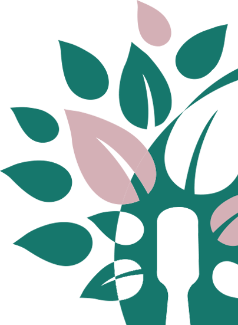

Ответственно
к здоровью планеты

Проект по сбору и переработке
использованных зубных щеток Curaprox

использованных зубных щеток Curaprox
Более 40 лет компания Curaprox помогает тысячам людей во всем мире сохранить здоровье зубов. Сегодня мы хотим внести свой вклад в экологическое здоровье и будущее нашей планеты. Мы предлагаем своим клиентам проект по сбору и переработке зубных щеток CURAPROX.
Данный проект создан для привлечения внимания к проблеме сбора и переработки пластика на всей территории России.
Мы постарались максимально упростить процесс сбора использованных зубных щеток CURAPROX и сделать его удобным для наших клиентов.
Мы сами реализовываем этот проект, начиная с изготовления контейнеров для сбора и заканчивая сбором и вывозом использованных зубных щеток на вторичную переработку.


полностью, ручка и щетина, поддаются вторичной переработке

Состоит из полиэстера PET 01, а не из нейлона, как у щеток других производителей. Полиэстер принимают в переработку повсеместно. Нейлон же отправляется на мусоросжигающие комбинаты или на полигоны, что противоречит экологичности и осознанному потреблению.
Выполнены из гигиенически безопасного полипропилена РР05. Он безопасен и что важно, его принимают на переработку!


Начиная с 1950-х годов, каждый год, в мире производится около 4 миллиардов тонн пластиковых отходов, которые нужно закопать, сжечь или переработать.
Миллионы тонн мусора, а в частности пластмасса, которая ежегодно выбрасывается, не разлагается за всю нашу жизнь. Для разложения пластика требуется не менее 200 лет. Он не перегнеет за всю нашу жизнь, жизнь наших детей и наших внуков.
9%
Переработали
12%
Сожгли
79%
На свалках или в окружающей среде


собранных и переработанных щеток
1500,0
Штук щеток собрано
4,170
Кг щеток собрано
Вторичная переработка пластиковых отходов обладает большим значением для всего мира.
При вторичной переработке любого сырья можно значительно улучшить экологию планеты и поддерживать баланс естественного восстановления ресурсов планеты.
Путь в тысячу
ли начинается
с первого шага.
Лао-Цзы.
Сдайте любые использованные зубные щетки CURAPROX в переработку в наших пунктах сбора и помогите поддержать экологию нашей планеты.

Мы принимаем все зубные щетки Curaprox СS 1560, 3960, 5460, 5460 ortho, 1006, 1009, Cura BABY, CS kid, CS Mega Soft, CS Velvet
Свяжитесь с нами по тел
+7 495 580 30 80
и мы расскажем вам как получить коробку для сбора зубных щеток
В Москве и Санкт-Петербурге сбор и вывоз осуществляется силами компании ООО Курапрокс. В регионах сбор и вывоз осуществляется силами компаний-партнеров.
Из переработанного пластика изготавливаются многоразовые ручки ProEcoPen
Свяжитесь с нами
по тел +7 495 580 30 80
Зубные щетки CURAPROX можно приобрести в большинстве стоматологических клиник.
Мы получили поддержку от наших клиник-партнеров и разместили в них коробки для сбора использованных зубных щеток.
Производим шариковые ручки, блокноты, зажимы для пакетов и воронки из вторсырья, переработанных пакетов Tetra Pak, зубных щеток и вторичного ПЭТ и ABS